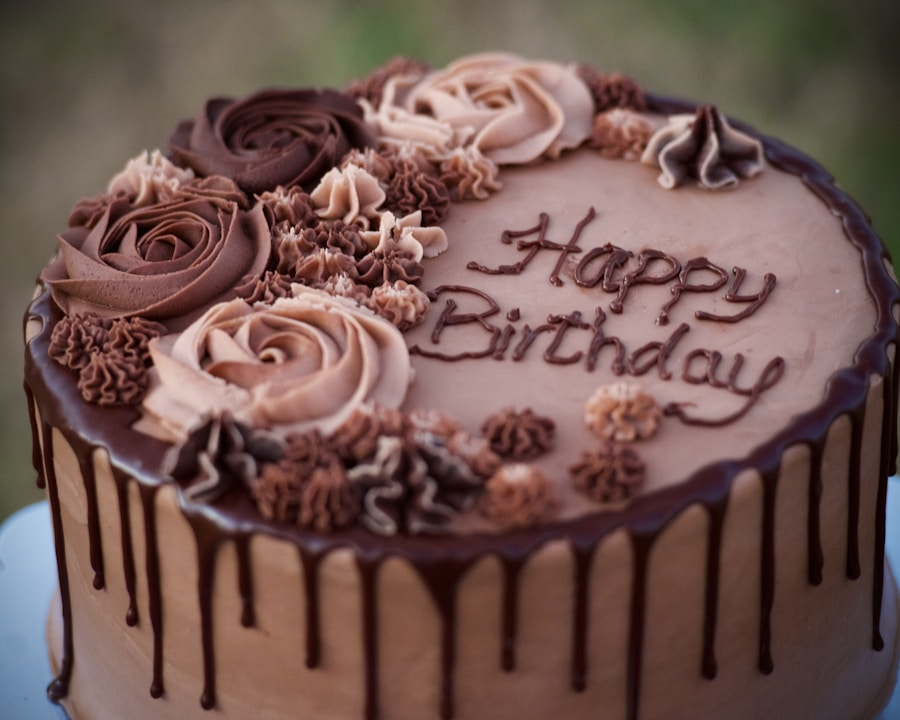

After piping hundreds of roses across hundreds of cakes, I've learned a handful of small tricks that make the difference between a rose that looks handmade in the best way and one that just looks rushed.
I have piped a lot of roses. Hundreds, maybe thousands at this point — on wedding cakes, birthday cakes, cupcake towers, and little celebration cakes that only served eight people but still deserved something beautiful on top. And after all of that, I can tell you with complete confidence: there is no single secret to a great buttercream rose. There are five. Here they all are.
1. Temperature is everything
The single biggest mistake I see beginner decorators make is piping with buttercream that's either too cold or too warm. Cold buttercream cracks and tears when you try to shape petals. Warm buttercream droops and loses its definition the moment it leaves the nozzle. The sweet spot is what I call 'soft peak' temperature — it should hold a shape when you press a spatula into it, but give slightly when you press your finger. In a Calgary kitchen, that's usually room temperature buttercream that's been out of the fridge for about 30 minutes in winter, or kept slightly cool in summer.
2. Consistent pressure, not speed
Most piping tutorials focus on hand speed — how fast you move as you pipe. I've found that consistent squeeze pressure matters far more. When you start a petal, the pressure should stay even throughout the curve. If you squeeze harder at the start and taper off, you get a thick-bottomed petal that narrows unnaturally. If you squeeze lightly and then push harder to 'finish', you get bulging petals that don't flow.
My suggestion: practise the squeeze without even moving your hand first. Just pipe straight columns of buttercream onto a piece of parchment, focusing entirely on keeping the pressure constant from start to finish. Once your squeeze is steady, adding the hand movement is much easier.
The hand is just a direction device. The squeeze is where the rose actually lives.
— Something I tell every student in my workshops
3. The flower nail method (and why it changes everything)
If you're piping roses directly onto the cake, this note might surprise you: the pros almost never do that. We pipe onto a flower nail — a small metal disk on a stick — and freeze the roses before placing them. Here's why this matters so much.
- You can rotate the rose freely as you pipe without repositioning your hand or arm
- The rose freezes in perfect shape and can be handled without smudging
- You can make 20 roses at once and apply them all in minutes
- Mistakes go in the bin, not onto the cake
To use a flower nail: tape a small square of parchment paper to the top with a tiny dab of buttercream. Pipe your rose on the parchment, then slide the paper off and lay it on a tray. Freeze for 15 minutes. Then peel the paper off the frozen rose and place it exactly where you want it on the cake. The rose will thaw in place and look as though it grew there.

4. Colour and depth: the two-tone trick
A flat-coloured rose looks fine. A rose with two tones looks extraordinary. The technique is simple: before you fill your piping bag, use a small paintbrush or palette knife to paint a thin streak of a slightly darker shade of your colour up the inside of the bag. When the buttercream pushes through the nozzle, it picks up that streak — and your rose will naturally have lighter outer petals and a richer, deeper centre.
5. The practice trick nobody talks about
This is the one I save for the end of my workshops because it genuinely surprises people: practise on a cake dummy or an upturned bowl, not on parchment paper. When you pipe flat onto paper, you don't deal with the curve and gravity of a real cake surface. The moment you move to an actual cake, it all feels different. Practising on a rounded surface — even just a large bowl — means your muscle memory actually transfers.
And please: scrape your practice buttercream back into the bowl, re-chill it, and use it again. There's no need to waste it. Once you can pipe five roses in a row on a curved surface without stopping to correct anything, you're ready for the real cake.
None of these secrets are complicated. What they all have in common is that they require you to slow down and pay attention to one thing at a time. Roses reward patience. Give them yours, and they'll give you something beautiful in return.